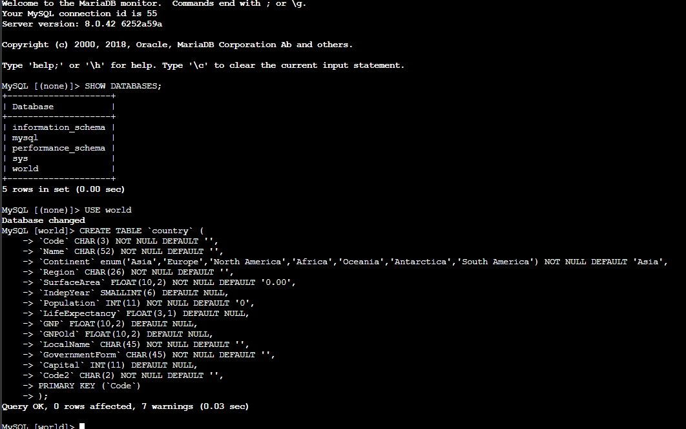
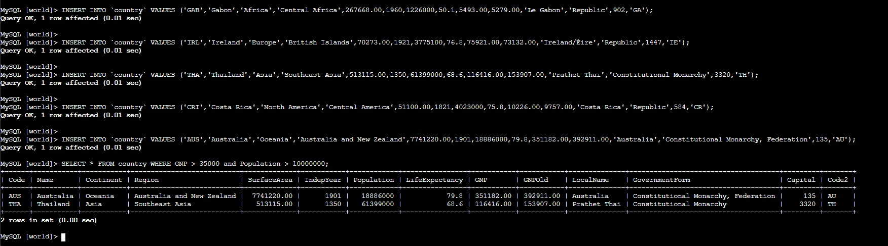

Aurora Instance Setup
Creating an Aurora MySQL-compatible cluster with the proper VPC and security group configuration.
Creación de una instancia de Amazon Aurora (compatible con MySQL), configuración de conectividad desde EC2 mediante Session Manager y consulta de datos con SQL.
Created an Amazon Aurora MySQL-compatible cluster through the
Amazon RDS console, connected to an EC2 instance via
Session Manager, installed the MariaDB client,
and executed DDL and DML statements against the world database.
Creating an Aurora MySQL-compatible cluster with the proper VPC and security group configuration.
Installing the MariaDB client on EC2, connecting via the cluster endpoint, and running DDL/DML operations against the world database.
Fully managed, MySQL-compatible relational database with up to 5x MySQL performance.
Managed relational database service that handles setup, operation, and scaling.
Virtual compute instance used as the client to connect to Aurora.
Detailed documentation of the four tasks: creating the Aurora cluster, connecting to EC2, configuring the client, and querying data.
aurora, master username: admin,
password: admin123.db.t3.medium.world.sudo yum install mariadb -ymysql -u admin --password='admin123' -h <cluster-endpoint>
SHOW DATABASES; (observed the world database).USE world;country table with columns for Code, Name, Continent, Region,
SurfaceArea, IndepYear, Population, LifeExpectancy, GNP, GNPOld, LocalName, GovernmentForm,
Capital, and Code2. Set Code as the PRIMARY KEY.SELECT * FROM country WHERE GNP > 35000 and Population > 10000000;


SQL statements and connection commands used during the lab.
SHOW DATABASES;Lists all databases on the Aurora instance.
USE world;Switches the active database context to world.
CREATE TABLE country (...)Defines the country table schema with 14 columns and Code as the primary
key.
INSERT INTO country VALUES (...)Inserts country records into the table (Gabon, Ireland, Thailand, Costa Rica, Australia).
SELECT * FROM country WHERE GNP > 35000 and Population > 10000000;Filters countries by GNP and population thresholds, returning Australia and Thailand.
mysql -u admin --password='admin123' -h <endpoint>Connects to the Aurora cluster via the MariaDB client.
-u : Username-p : Password-h : Host (cluster endpoint)Amazon Aurora is a managed MySQL-compatible database that simplifies administrative tasks such as patching, backups, and scaling while providing high performance. Combining RDS/Aurora with EC2 creates a complete client-server database workflow: the database layer handles persistent storage and structured querying, while the compute layer provides a secure, interactive environment for administration and application logic.